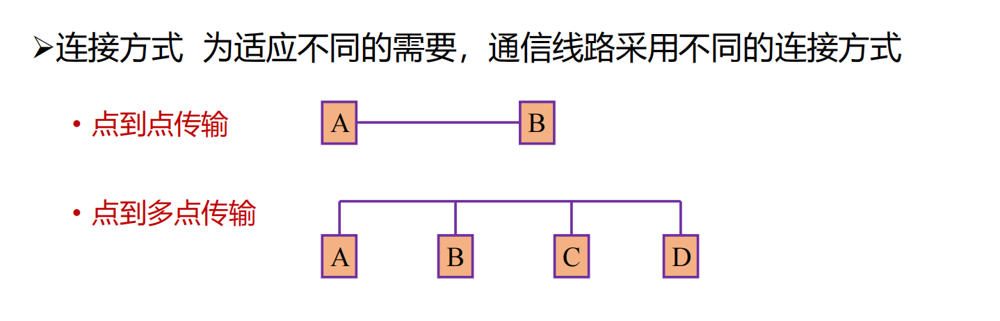

Chapter1
第二章 物理层
2.1 物理层基本概念
- 位置：网络体系结构中的最低层，既不是连接计算机的具体物理设备，也不是负责信号传输的具体物理媒体
- 功能：如何在连接各计算机的传输媒体上传输数据比特流
- 数据链路层将数据比特流传送给物理层
- 物理层将比特流按照传输媒体的需要进行编码
- 然后将信号通过传输媒体传输到下一个节点的物理层
- 作用：尽可能屏蔽不同传输媒体和通信手段的差异
- 为数据层提供一个统一的数据传输服务
机械特性
- 定义接线器的形状与尺寸、引线数目和排列、固定和锁定装置
电气特性
- 规定了多条信号线的电气连接及有关电路特性
- 发送器和接收器的电路特性、负载要求、传输速率和连接距离等
- 如发送信号电平、发送器和接收器的输出阻抗、平衡特性等
功能特性
描述接口执行的功能，定义接线器的每一引脚(针，Pin)的作用
过程特性
指明对于不同功能的各种可能事件的出现顺序
常用标准
- 点对点通信线路用于直接连接两个结点
- 点对点通信线路的物理层标准
- RS-232-C
- RS-449
- 广播通信线路：一条公共通信线路连接多个结点
2.2 数据通信基础
傅里叶分析：在网络通信中，信息是以电磁信号（或简称信号）的形式传输的
- 电磁信号是时间的函数(时域观)
- 也可以表示成频率的函数(频域观)
已知\(g(t)\)，求\(a_n\),\(b_n\),\(c\) + 求\(c\):左右积分从0积到T：\(c = \frac{2}{T}\int_{0}^{T}g(t)dt\) + 求\(a_n\):先乘\(sin(2πkft)\)再积：\(a_n = \frac{2}{T}\int_{0}^{T}g(t)sin(2πkft)dt\) + 求\(b_n\):先乘\(cos(2πkft)\)再积：\(b_n = \frac{2}{T}\int_{0}^{T}g(t)cos(2πkft)dt\)
有限带宽信号
- 频谱（spectrum）是一个信号所包含的频率的范围
- 信号的绝对带宽等于频谱的宽度(end-start)
- 许多信号的带宽是无限的，然而信号的主要能量集中在相对窄的频带内，这个频带被称为有效带宽，或带宽（bandwidth）
- 信号的信息承载能力与带宽有直接关系，带宽越宽，信息承载能力越强
信道有截止频率fc, 0 ~ fc的振幅衰减较弱， fc以上的振幅衰减厉害，这主要由信道的物理特性决定， 0 ~ fc是信道的有限带宽
对于比特率为B bps的信道，发送8位所需的时间为 8/B秒，若8位为一个周期，则一次谐波的频率为\(f_1 = B/8\) Hz。
能通过信道的最高次谐波数目为：\(N = f_c / f_1\)
信道的最大数据传输速率
奈魁斯特(H. Nyquist)推导出无噪声有限带宽信道的最大数据传输率公式
- 最大数据传输率 = \(2Hlog_2V\)(bps)
- 任意信号通过一个带宽为Ｈ的低通滤波器，则每秒采样2H次就能完整地重现该信号，信号电平分为V级
Symbol rate vs Data rate
- Symbol rate == baud rate
- usually, data rate = symbol rate * bits per second

香农定理
随机噪声的出现的代销用信噪比(S/N)来衡量，\(10log_{10}S/N\)，单位：分贝
香农定理：带宽为 H 赫兹，信噪比为S/N的任意信道的最大数据传输率为：\(Hlog_2(1 + S/N)\) (bps)
- 信息量：
- 根据香农理论，一条消息包含信息的多少称为信息量
- 信息量的大小与消息所描述时间的出现概率有关
- 一条消息所荷载的信息量等于它所表示的事件发生的概率p的倒数的对数：\(I = -log_ap\)
- 当a为2时，消息单位为比特
- 当a为e时，消息单位为奈特
通信、消息、信息、数据、信号
- 通信是在源点和终点之间传递消息或者信息，但消息和信息有着不同的概念
- 消息使之能向人们表达客观物质运动和主观思维活动的文字、符号、数据、语音和图像等
- 能被通信双方所理解
- 可以相互传递
- 信息是指包含在消息中对通信者有意义的那部分内容
- 数据是对某一事实的不经解释并赋予一定含义的数字、字母、文字等符号及其组合的原始表达
- 数据是消息的一种表达形式，是传递某种意义或信息的实体
- 信号是消息的载体，如电信号、光信号等
传输方式
数字通信与模拟通信
- 以**信号来传送消息的通信方式称为**通信，而传输**信号的通信系统称为**通信系统(**为数字/模拟)
- 模拟信号和数字信号在传输过程中可以相互变换，即A/D和D/A
串行传输和并行传输
- 串行传输：数据在一个信道上按位依次传输的方式
- 所需线路数少，投资省，线路利用率高
- 在发送和接收端需要分别进行并/串和串/并转换
- 收发之间必须实施同步。适用于远距离数据传输
- 并行传输：数据在多个信道上同时传输的方式
- 在终端装置和线路之间不需要对传输代码作时序变换
- 需要n条信道的传输设施，故其成本较高，适用于要求传输速率高的短距离数据传输
点到点传输/点到多点传输

单工、半双工和全双工
基带传输和频带传输
按照传输系统在传输数据信号过程中是否搬其频谱区分
- 基带传输(baseband)：不搬移信号频谱
- 频带传输(passband)：利用调制解调器搬移信号频谱的传输体制
数据编码技术(for baseband)
研究数据在信号传输过程中如何进行编码(变换)
- 常用的几种编码方式
- 不归零编码: 0为低电平，1为高电平
- 缺点：
- 难以分辨一位的结束和另一位的开始
- 发送方和接收方必须有时钟同步
- 若信号中“0”或“1”连续出现，信号直流分量将累加
- 结论：容易产生传播错误
- 缺点：
- 曼彻斯特码：每一位中间都有一个跳变，从低电平跳到高电平为"0"，从高电平跳到低电平为"1"
- 逢"1"变化的NRZ码：在每位开始时，逢“1”电平跳变，逢“0”电平不跳变
- 不归零编码: 0为低电平，1为高电平
频带传输
数字数据的模拟传输，也称频带传输
- 指在一定频率范围内的线路上，进行载波传输。用基带信号对载波进行调制，使其变为适合于线路传送的信号
2.3 传输介质
传输介质分类
- 导引型传输介质：就是有一个独立的载体能够引导信号进行传输，如双绞线、同轴电缆、光纤等
- 非导引型传输介质：没有独立的载体，信号在大气层、外层空间或海洋中进行传播
可以看到，带宽是描述传输信息量速率的，所谓的cost(或许可以翻译为开销)是指每美元可以支撑传输的信息量。
"永远不要低估在高速公路上飞驰的装满磁带的旅行车的带宽"。不太懂什么意思，绷，估计指的是这种传输方式带宽也相当大吧。
导引型传输介质
-
双绞线
- 具有绝缘保护层的两根铜导线按一定密度绞缠在一起形成的线对
- 影响双绞线的特性阻抗、衰减和近端串扰的因素
- 适用于模拟传输或数字传输，距离一般为几公里到几十公里
+ 同轴电缆
- 硬的铜质芯线和外包一层绝缘材料，在绝缘材料外面是一层网状密织的外导体，以及塑料保护外套组成
- 具有寿命长、容量大、传输稳定、外界干扰小、维护方便等优点
- 按内、外导体尺寸不同，分为中、小和微三种规格
- 按特性阻抗的不同，分为基带同轴电缆（50Ω）和宽带同轴电缆（75Ω）
- 基带同轴用来传送基带信号，其距离可达1km，传输速率为10Mb/s
- 宽带同轴是有线电视的标准传输电缆，传送频分复用的宽带信号，信号频率可高达300-400MHz，距离可达100km
-
光纤
-
新型的光波导，结构一般是双层或多层同心园柱体
-
主要分为：
- 多模突变光纤（又称阶跃光纤）： 指光纤的纤芯和包层的折射率沿光纤的
- 径向分布是均匀的，而在两者的交界面上发生突变
- 多模突变光纤的带宽较窄，适用于小容量短距离通信
- 多模渐变光纤：指纤芯的折射率是半径 r 的函数n(r)，沿着径向随 r 的增加逐渐减小，直到达到包层的折射率值为止，而包层内的折射率又是均匀的
- 多模渐变光纤带宽较宽，适用于中容量中距离通信
- 单模光纤：指纤芯中仅传输一种最低模式的光波，由于纤芯直径很小（通常为8～12μm），制作工艺难度大，其折射率分布属于突变型
- 多模突变光纤（又称阶跃光纤）： 指光纤的纤芯和包层的折射率沿光纤的